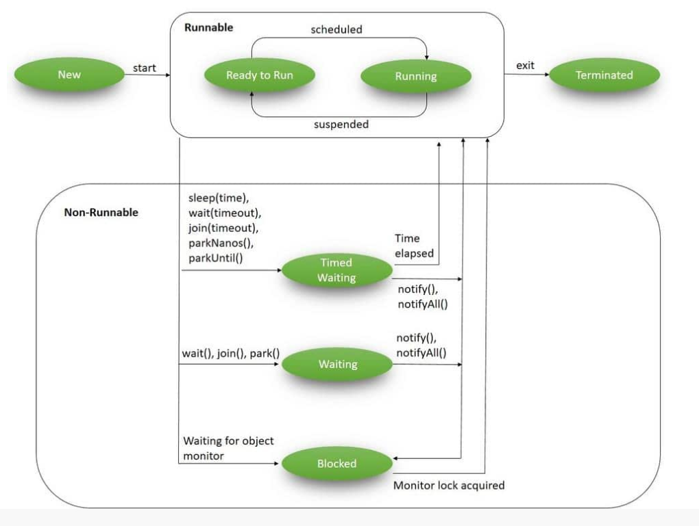
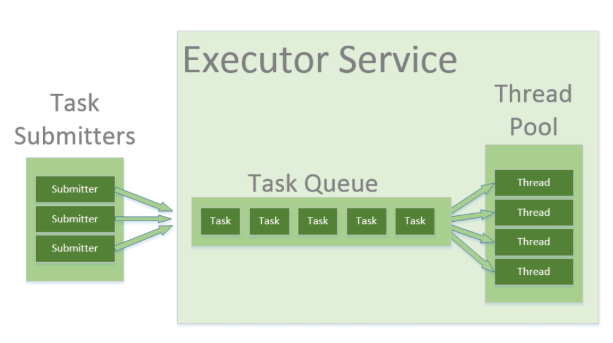

Multithreading and Synchronization
Thread Lifecycle
- In the Java language, multithreading is driven by the core concept of a Thread.
- During their lifecycle, threads go through various states:
- NEW (or a Born Thread)
- A newly created thread that has not yet started the execution.
- It remains in this state until we start it using the
start()method.
- RUNNABLE
- When we’ve created a new thread and called the
start()method on that, it’s moved fromNEWtoRUNNABLEstate. - Threads in this state are either running or ready to run, but they’re waiting for resource allocation from the system.
- In a multi-threaded environment, the Thread-Scheduler (which is part of JVM) allocates a fixed amount of time to each thread.
- So it runs for a particular amount of time, then relinquishes the control to other
RUNNABLEthreads.
- When we’ve created a new thread and called the
- BLOCKED
- A thread is in the
BLOCKEDstate when it’s currently not eligible to run. - It enters this state when it is waiting for a monitor lock and is trying to access a section of code that is locked by some other thread.
- A thread is in the
- WAITING
- A thread is in
WAITINGstate when it’s waiting for some other thread to perform a particular action without any time limit. - Any thread can enter this state by calling any one of the following three methods:
object.wait()thread.join()LockSupport.park()
- A thread is in
- TIMED_WAITING
- A thread is in
TIMED_WAITINGstate when it’s waiting for another thread to perform a particular action within a stipulated amount of time. - There are five ways to put a thread on
TIMED_WAITINGstate:thread.sleep(long millis)wait(int timeout)orwait(int timeout, int nanos)thread.join(long millis)LockSupport.parkNanosLockSupport.parkUntil
- A thread is in
- TERMINATED
- This is the state of a dead thread.
- It’s in the
TERMINATEDstate when it has either finished execution or was terminated abnormally.
- NEW (or a Born Thread)

Runnable and Callable Interfaces
Runnable
- This interface is designed to provide a common protocol for objects that wish to execute code while they are active.
- For example,
Runnableis implemented by classThread. - Being active simply means that a thread has been started and has not yet been stopped.
- In addition,
Runnableprovides the means for a class to be active while not subclassingThread. - A class that implements
Runnablecan run without subclassingThreadby instantiating a Thread instance and passing itself in as the target. - Typically, the
Runnableinterface is the preferred choice when the intention is solely to redefine therun()method without altering any other methods of Thread. - This is important because classes should not be subclassed unless the programmer intends on modifying or enhancing the fundamental behavior of the class.
Callable
- The Callable interface, similar to Runnable, is designed to represent a task that can be executed by a thread.
- However, unlike Runnable, the Callable interface can return a result and is able to throw a checked exception.
- The Executors class contains utility methods to convert from other common forms to Callable classes.
Synchronization
- In multithreading, synchronization is important to make sure multiple threads safely work on shared resources.
- Without synchronization, data can become inconsistent or corrupted if multiple threads access and modify shared variables at the same time.
- In Java, it is a mechanism that ensures that only one thread can access a resource at any given time.
- This process helps prevent issues such as data inconsistency and race conditions when multiple threads interact with shared resources.
- Java provides a way to create threads and synchronize their tasks using synchronized blocks.
- A synchronized block in Java is synchronized on some object.
- Synchronized blocks in Java are marked with the
synchronizedkeyword. - All synchronized blocks synchronize on the same object and can only have one thread executed inside them at a time.
- All other threads attempting to enter the synchronized block are blocked until the thread inside the synchronized block exits the block.
Process Synchronization
- It is a technique used to coordinate the execution of multiple processes.
- It ensures that the shared resources are safe and in order.
Thread Synchronization
- It is used to coordinate and ordering of the execution of the threads in a multi-threaded program.
- Mutual Exclusive:* helps keep threads from interfering with one another while sharing data.
- Synchronized method.
- Synchronized block.
- Static synchronization.
- Cooperation (Inter-thread communication)
- A mechanism in which a thread is paused from running in its critical section, and another thread is allowed to enter (or lock) the same critical section to be executed.
- Java provides
wait(),notify(), andnotifyAll()methods to facilitate this communication.
Synchronization in Java
Synchronized Method
- Using
synchronizedkeyword with method signature. - This synchronizes the entire method to ensure only one thread can execute it at a time.
Synchronized Block
- Synchronize a block of code instead of the entire method.
- This provides more control and efficiency.
- The parameter passed is the monitor object.
- If the method is static, we would pass the class name in place of the object reference, and the class would be a monitor for synchronization of the block.
Static Synchronization
- Synchronize static methods to ensure only one thread can execute them for the class, not the instance.
Locks
- In Java, every object has a lock associated with it.
- As per convention, a thread requiring consistent access to an object's fields must acquire the object's lock before accessing them.
- Subsequently, the lock is released when the thread is finished with the fields.
- Use
java.util.concurrent.locks.Lockfor more sophisticated thread synchronization.
Executors and Thread Pools
- It is an object that executes submitted
Runnabletasks. - This interface provides a way of decoupling task submission from the mechanics of how each task will be run, including details of thread use, scheduling, etc.
- An
Executoris normally used instead of explicitly creating threads. - However, the
Executorinterface does not strictly require that execution be asynchronous. - In the simplest case, an executor can run the submitted task immediately in the caller's thread.
- Many
Executorimplementations impose some sort of limitation on how and when tasks are scheduled. - Has
executemethod that executes the given command at some time in the future. The command may execute in a new thread, in a pooled thread, or in the calling thread, at the discretion of theExecutorimplementation.

ExecutorService
- It is a JDK API that simplifies running tasks in asynchronous mode.
- It automatically provides a pool of threads and an API for assigning tasks to it.
- It is an
Executorthat provides methods to manage termination and methods that can produce aFuturefor tracking progress of one or more asynchronous tasks. ExecutorServicecan executeRunnableandCallabletasks.- An
ExecutorServicecan be shut down, which will cause it to reject new tasks. - This doesn’t cause immediate destruction of the service, rather makes the service stop accepting new tasks and shut down after all running threads finish their current work.
- Upon termination, an executor has no tasks actively executing, no tasks awaiting execution, and no new tasks can be submitted.
- An unused
ExecutorServiceshould be shut down to allow reclamation of its resources.
Thread Pools
- In Java, threads are mapped to system-level threads, which are the operating system’s resources.
- If we create threads uncontrollably, we may run out of these resources quickly.
- The Thread Pool pattern helps to save resources in a multithreaded application and to contain the parallelism in certain predefined limits.
- When we use a thread pool, we write our concurrent code in the form of parallel tasks and submit them for execution to an instance of a thread pool.
- This instance controls several re-used threads for executing these tasks.
- We use the
ExecutorandExecutorServiceinterfaces to work with different thread pool implementations in Java. - Usually, we should keep our code decoupled from the actual implementation of the thread pool and use these interfaces throughout our application.
- Some thread pool services by Java:
ThreadPoolExecutorScheduledThreadPoolExecutorForkJoinPool
Resources
- https://www.baeldung.com/java-thread-lifecycle
- https://docs.oracle.com/javase/8/docs/api/java/lang/Runnable.html
- https://medium.com/@reetesh043/javas-multithreading-a-deep-dive-into-runnable-and-callable-interfaces-9a6f842b183f
- https://www.geeksforgeeks.org/java/synchronization-in-java/
- https://medium.com/@pratik.941/synchronization-in-java-27a9fc268a18
- https://docs.oracle.com/javase/8/docs/api/java/util/concurrent/Executor.html
- https://docs.oracle.com/javase/8/docs/api/java/util/concurrent/ExecutorService.html
- https://www.baeldung.com/java-executor-service-tutorial
- https://www.baeldung.com/thread-pool-java-and-guava